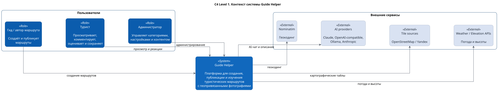
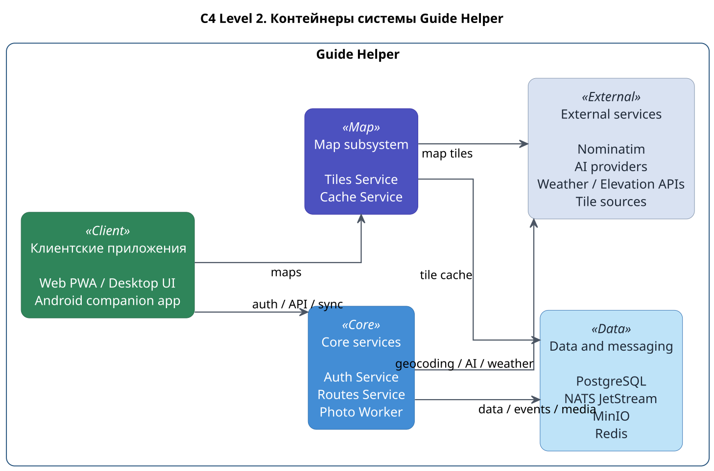
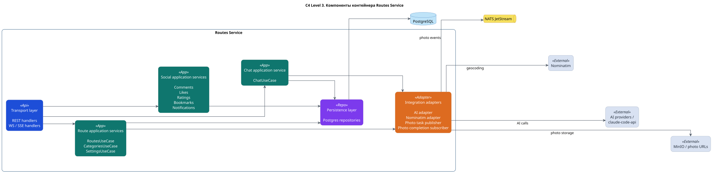
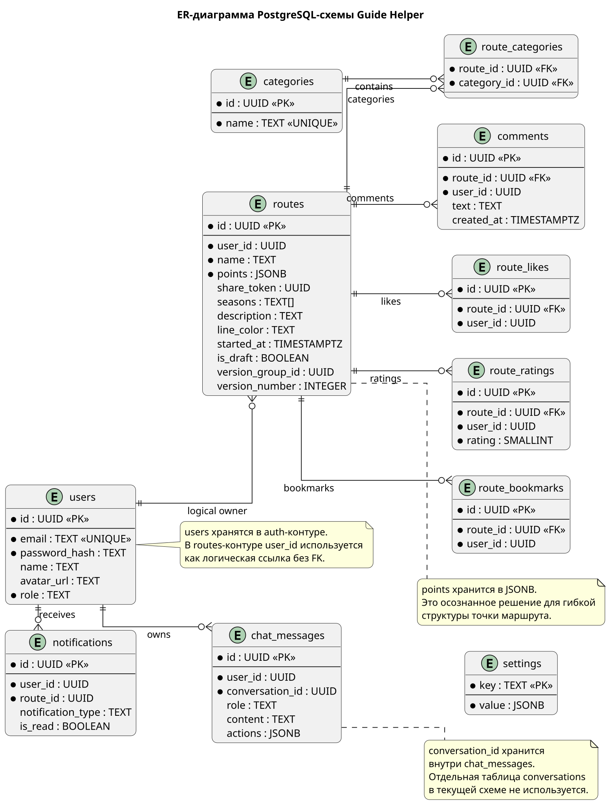
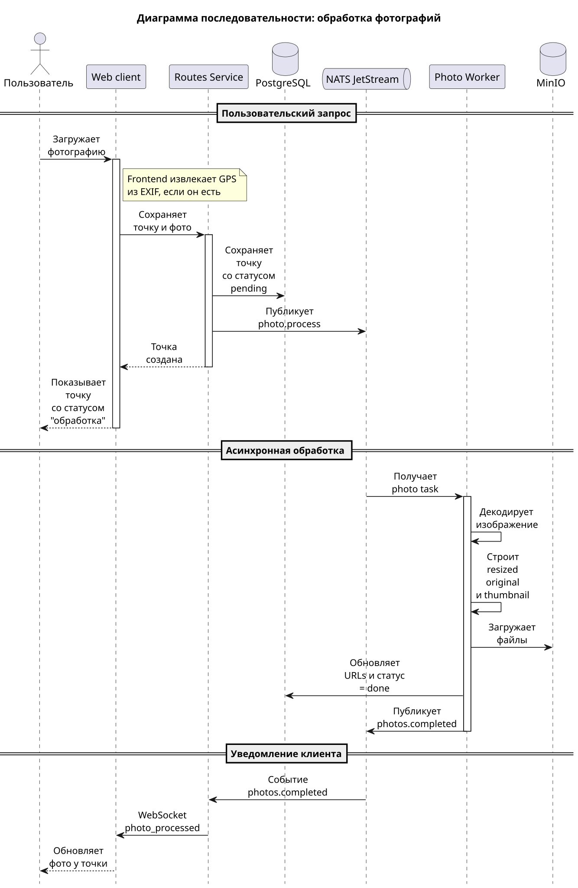

C4 Level 1: контекст системы
Показывает Guide Helper как единую систему, пользователей и внешние сервисы.

C4 Level 2: контейнеры системы
Показывает клиентские приложения, backend-сервисы, хранилища данных и внешние API.

C4 Level 3: сервис маршрутов
Детализация основного сервиса маршрутов: API, use case слой, репозитории и интеграции.

ER-диаграмма базы данных
Основные сущности PostgreSQL: пользователи, маршруты, категории, комментарии, оценки, уведомления и AI-чат.

Sequence: обработка фотографии
Последовательность загрузки фото, публикации задачи, фоновой обработки и обновления клиента.
